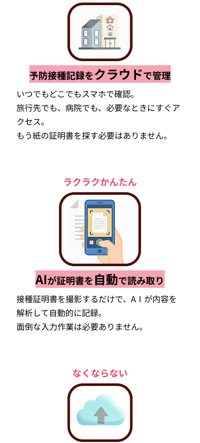
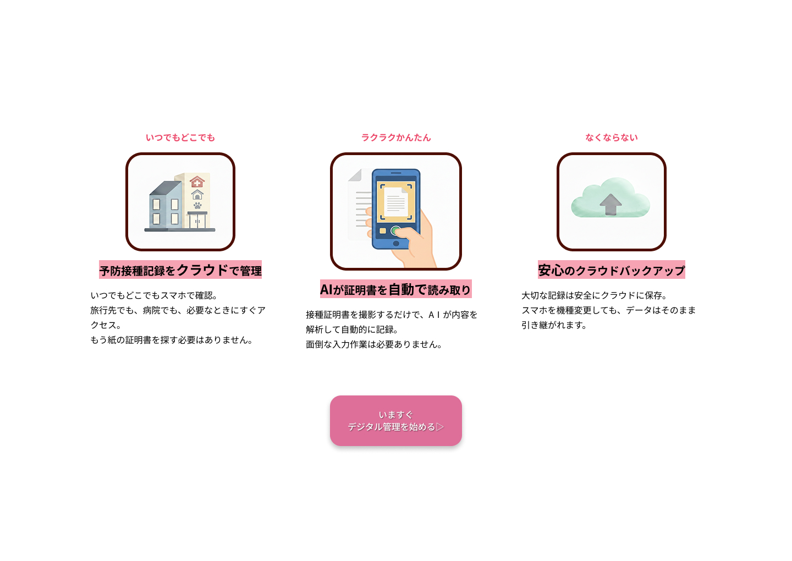

アプリとしての機能は完成していましたが、初見のユーザーにとって「どんなアプリなのか」が伝わりにくいという課題がありました。
また、紙の証明書の管理は、多くの飼い主が日々の中で不便さを感じているはずのことですが、それが「当たり前」になりすぎていて、「デジタルで解決しよう」という思いに至っていない（問題が潜在化している）状態でした。そのため、サービスの便利さを正しく伝え、ユーザーが自分事として「使ってみたい」と思える動機付けが必要となっていました。
アプリとしての機能は完成していましたが、初見のユーザーにとって「どんなアプリなのか」が伝わりにくいという課題がありました。
また、紙の証明書の管理は、多くの飼い主が日々の中で不便さを感じているはずのことですが、それが「当たり前」になりすぎていて、「デジタルで解決しよう」という思いに至っていない（問題が潜在化している）状態でした。そのため、サービスの便利さを正しく伝え、ユーザーが自分事として「使ってみたい」と思える動機付けが必要となっていました。
「紙での管理は面倒だけど仕方ない」と諦めている飼い主に対し、紛失のリスクや持ち歩きの煩わしさを改めて提示する。日々の生活の中に潜む不便さを自覚してもらうことで、「アプリで解決したい」という前向きな意欲を引き出すことを第一の目標とする。
「登録が難しそう」「操作が複雑そう」といった先入観を持つユーザーに対し、簡単ステップで完結する利便性を強調する。デジタル特有の冷たさを排除し、使い慣れた紙の管理よりも「圧倒的にスマートで、かつ確実である」という安心感を伝え、導入への心理的ハードルを最小限に抑える。
普段、当たり前になりすぎていて気づかない「紙の証明書の不便さ」を再認識してもらうため、冒頭に課題（共感）セクションを配置しました。飼い主さんが日常で感じる「困った」を可視化することで、解決策としてのアプリの必要性を自分事として感じてもらえるよう導入を工夫しました。
「いつでもどこでも」「ラクラクかんたん」「なくならない」といった、直感的な言葉とイラストをセットで配置しました。難しい説明を読み込まなくても、パッと見ただけでアプリがもたらす便利さが伝わるようにし、デジタルツールに対する「難しそう」という先入観を払拭することを目指しました。
全体を柔らかな茶系でまとめ、ペットとの穏やかな日常を表現しました。アクセントカラーには、ペットの肉球をイメージしたピンクを採用。用途に合わせて色の強さを使い分けることで、「情報の重要度」をパッと見て判断できるように工夫しています。
濃いピンク（#EC496A）： 「いつでもどこでも」といったアプリの特長や、目立たせたい文字など強調したい箇所に使用。画面をざっと流して見ている時でも、アプリの良さが自然と目に留まるように、一番濃い色で統一しました。
中間のピンク（#DE6F99）： ボタンに使用。文字の強調とは少しだけ色を変えることで、「読む場所」と「押す場所」を自然に区別しつつ、アプリ全体の可愛らしい雰囲気を損なわないトーンを選びました。
淡いピンク（#EDA6BC）： 枠線や吹き出しに使用。画面全体の優しさを保ちつつ、メインの情報を邪魔しない薄めのピンクを使用し、リズム感のある構成を目指しました。
大切なペットの情報を「いつでもどこでも」確認できるよう、スマートフォンでの操作性を最優先に設計しました。画面が小さいスマホでは、タップしやすいボタンサイズや情報の優先順位を整理し、PC版では一覧性を高めたレイアウトを採用。外出先の動物病院ではスマホで素早く、自宅でのデータ整理はPCでじっくりと。利用シーンに合わせた最適なUIを提供し、飼い主さんのストレスフリーな体験を実現しています。


「管理は紙で十分だし、その方が扱いやすい」と思っていた飼い主さんに、アプリを使うメリットを分かりやすく伝えることで、「こっちの方がずっと便利かも」と意識を変えてもらうことができました。
「わざわざ登録するのは大変そう」「自分には使いこなせないかも」と敬遠しがちなユーザーの気持ちに寄り添い、全体を柔らかい雰囲気にまとめました。ページを見た瞬間に「これなら私にもできそう、使ってみようかな」と思ってもらえる、親しみやすいデザインを実現しました。
デジタルツールに対して「難しい」「面倒」という先入観を持つユーザーには、言葉を尽くすよりも、いかにパッと一目でその便利さを伝えられるかが重要であると学びました。
また、デザインの色調やトーンを整えることで、サービスへの抵抗感をなくし、親しみやすさを演出できるデザインの可能性を実感しました。この制作を通して、技術的な面だけでなく、「ユーザーの心理に寄り添うデザイン」の大切さを深く知るきっかけとなりました。